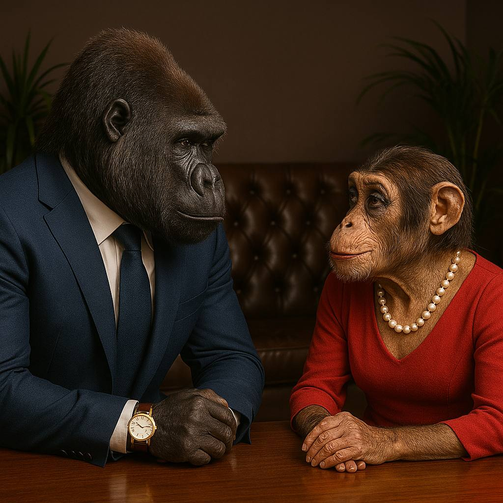

Весняний квітневий сніг падав на нарощені рєсніци Алєговни.
Вона була рада, бо він скривав її сльози…
Рівно 64 години Едіка не було на связі.
Жанна обзвонила всі лікарні й морги, пробила по «базі ухилятів» - все марно.
Тоді вона вирішила знайти Льоню - брата - блізнєца, про якого розказував Едік.
По деклараціях Льоня був власником акціонерного общєства «Житомирський маслозавод». Довго не думая, Алєговна сіла за руль свого мерцедеса-купе фівалєтового кольору і за 3 часа була в городє, которого нєт …
На прохідній заводу дід в совєцкій воєнній шапці довго не хотів пропускать Алєговну. Але Жанна показала своє удостовєрєніє развєдчіка і тоді її пропустили.
В кабінєті дірєхтора пахло сігарами і віскарьом. Хоча Алєговна думала, що буде пахнуть молоком…
Їй сказали пождать в прійомній, де був красІвий кожаний діван і вазони.
Десять мінут казалось длілись безконєчно…
І тут в дверях перед нею появився він … горіла нєопісуємой красоти в синьому пінжаку і з ролєксами на руці. В кабінєті була тиша, бо Льоня тоже не міг одвести глаз від Жанночкі, яка була в бусах і красном платті.
Алєговна не знала з чого начать разгавор і першим заговори Льоня:
- Прівєтсвую, Лєонід, - і він протягнув свою велику руку до Алєговни, - що привело таку красіву женщіну в наш Житомирський маслозавод ?